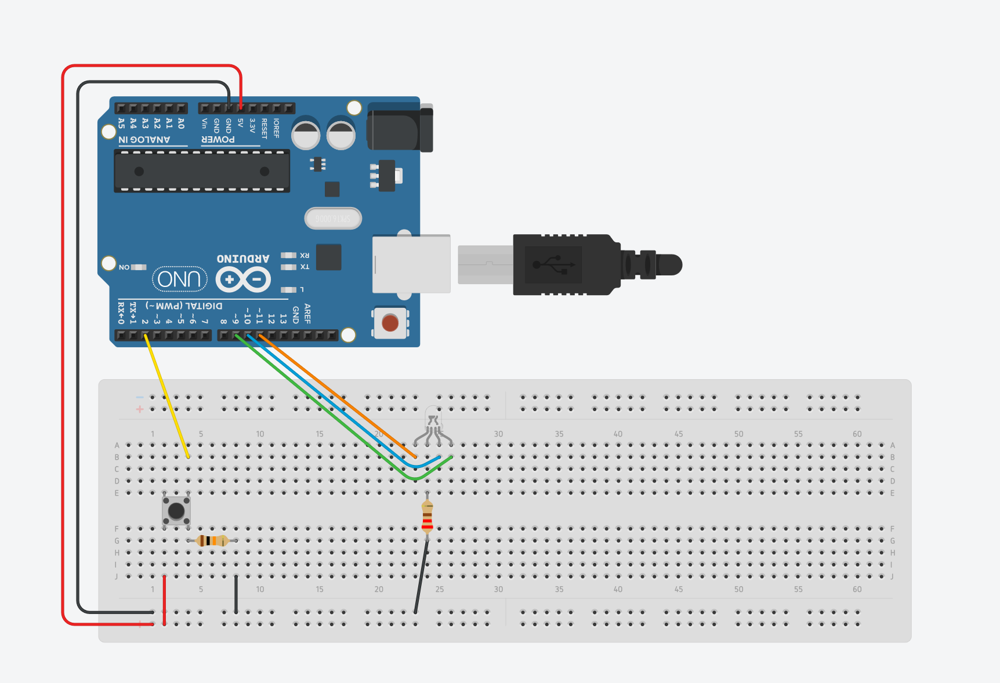

I connected the red, green and blue pins of the LED to analog pins 11, 10, and 9 respectively. I connected them to analog pins so that I could fade them using PWM.
I connected the LED's cathode (I believe that's right) to ground through a resistor; I chose 220Ω because it is a good and convenient resistance level that will work
for all colors of the LED.
The pushbutton is connected to digital pin 2 as input so I can read the button state. I followed guidance from
the example code StateChangeDetection as well as this Arduino button tutorial
by Muhammad Aqib and connected one leg of the pushbutton through a 10kΩ pull-down resistor to ground, and the other to the 5 volt supply. I would explain more in-depth my reasoning and choice behind
this resistor, however unlike the resistor for the LED I did not calculate for it or factor it in myself. Rather, the pull-down resistor is just a common implement to ensure state detection in a circuit; I
used 10kΩ because it's what was used in both of the examples I mentioned, both of which covered what I wanted to do for my circuit. I don't know if 10kΩ is just the standard/a common resistance to use for
pull-downs in general, or if there is a reason in particular that it was used for these examples. Either way, I implemented it into my circuit and it worked great.